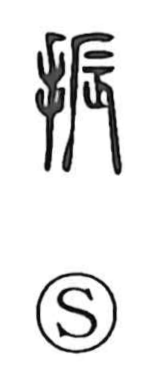

振

Uncategorized
Kun: furu, furuu, fureru, furi | On: shin
to shake ・ to swing ・ to wield ・ to encourage ・ to aid ・ appearance ・ dance gestures
Explanation
A phono-semantic compound: the hand element marks an action done with the hand, while the phonetic 辰—considered the original form of 蜃 “clam”—depicted a clam thrusting out its limbs and moving, thus carrying the sense of motion and giving the on reading shin. With the hand added, the character came to mean to shake or wave with the hand, and by extension to wield or exercise. From the idea of setting things in motion it also came to mean stirring the heart—encouraging and cheering—and, by graphic loan, to relieve or help. In Japanese usage it further developed senses such as minari (one’s clothing and appearance) and furi, the stylized movements of music and dance.